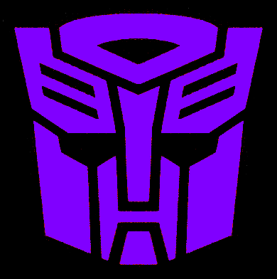
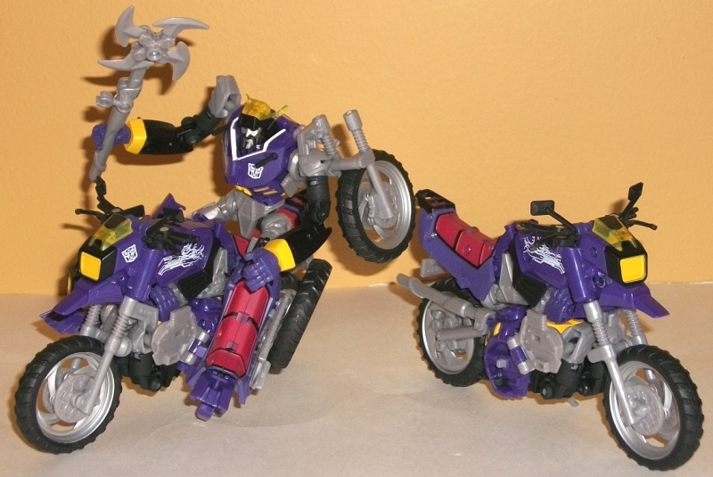
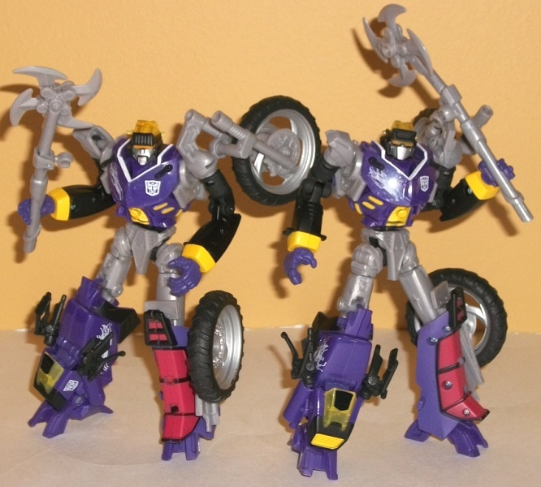

Junkions
(Shattered Glass) [Botcon 2012 Attendee-Only Exclusive]


Allegiance
: Autobot (Shattered Glass)
Size
: Deluxe (comes sold in sets
of three [Wreck-Gar, Scrap Iron, and Junkheap]
Difficulty of Transformation
: Hard
Color Scheme
: Moderately light milky
gray, black, purple, and some yellow, silver, red, transparent yellow,
and white
Rating
: 8.9
(NOTE: Because these are repaints, this
is not a full-blown review. This mainly covers any changes made to the
mold and the color scheme, and merely compares it to Autobot Alliance Wreck-Gar.
For a review on the mold itself, read the review of Autobot Alliance Wreck-Gar
here
.)
The Wreck-Gar/
Junkheap
mold was basically made to be a troop-builder-- given that the toy can
ride itself-- and so that's just what the Botcon folks did in 2012. However,
not content with simply releasing a set of three "generic Junkions", they
went the extra mile and gave each in the set of three their own headsculpt
(each created by Hasbro, though only two were used on a U.S. retail release
as of this writing on 02/14). This certainly makes each in the set worth
owning, given that each is now their own character! Each has their face
(or faceplate) painted silver as well, so there's a few individual paint
apps on each variation of the mold, too.
However, beyond the
face each Shattered Glass Junkion is identical, so I can still pretty much
talk about all of them as a whole. The Junkions' color schemes are based
off of the "basic" G1 Insecticons' color schemes, and it works really well
on the mold (not to mention it still keeps with the general Transformers
theme of purple being only on bad guys). The purple is a particularly great-looking
shade of the color, and it goes extremely well with the black. The gray
is an okay secondary color, but it's the only one I'm not too enthused
about-- it's still of the dull milky variety, though at least it's not
TOO light. A metallic shade probably would've worked better. Anyways, the
rest of the paint apps on the Junkions look fantastic-- the red seats,
the yellow and silver bits here and there, the transparent yellow windshield--
all contrast excellently with the main colors. The Junkions in the Shattered
Glass universe are also a bit like the Borg from Star Trek, speaking in
"computer-like" sentences and "assimilating" other Transformers into duplicates
of themselves, and to help emphasize this, each Junkion also has really
cool "circuitry" patterns on their robot chests and on the sides of their
motorcycle modes. They're pretty nice touches, and help make the Junkions
a little bit more than simply "Junkions in Insecticon colors".
The Shattered Glass
Junkions are a great idea for a troop-builder redeco set, and they have
fantastic color schemes, whether you regard the G1 homage in assessing
them or not. The "circuitry" lines help to add a bit of an individual flavor,
and overall, these are my second-favorite exclusives from Botcon 2012 (it
certainly helps that they each have their own individual heads)!
Wreck-Gar Bio
:
FUNCTION: Junkion Leader
MOTTO: "Oh, we have such sights to show
you..."
A hastily assembled mass of scrap metal
and spare parts, Wreck-Gar was an experiment, one in which his creators
provided him the ability to clone himself at will, using the bodies of
fallen robots as raw material. What they did not count on was his ability
to take this power and use it on living machines! Taking a sadistic pleasure
in giving the "gift" of his own image to other robots, he gained a following
on Cybertronians, who had lost hope and were seeking an escape from the
misery of the Autobot/Decepticon conflict. In time, after both Autobots
and Decepticons fell victim to Wreck-Gar's hive, the factions had no choice
but to work together to destroy his Junkions and imprison him on Paradron.
When Ultra Magnus began his campaign, he freed Wreck-Gar from his cell
and offered him a place in his personal army, which he accepted. Aside
from his own Energon Axe weapon and cerebral inhibitor blaster, Wreck-Gar
has full control over any Junkion warrior he creates. His overconfidence
is his greatest weakness.
Strength: 9.0
Intelligence: 7.0
Speed: 8.0
Endurance: 10.0
Rank: 6.0
Courage: 8.0
Fireblast: 6.0
Skill: 9.0
Junkion Type 001/Scrap Iron Bio
:
FUNCTION: Junkion Hive
MOTTO: "You have been deemed scrap.
Your existence no longer matters."
The process of becoming one with the
Hive is not something that most do willingly but is forced upon them by
Wreck-Gar. The conversion strips a Transformer of its ember, leaving all
but the faintest echo of its previous self. Evil Autobot guards on the
prison planet Paradron made excellent seeds for Junkion Type 001 conversion
due to their innate sense of loyalty to their superiors and love of seeing
Heroic Decepticons in suffrage. The Hive limits the sensory perceptions
of the Junkion troops, but many Type 001 feel a slight tinge of pleasure
when in the midst of destruction. Following the will of the Hive, Type
001 troops serve as front line warriors in battle. They revel in seeing
their four-bladed axe rip an enemy into pieces.
Strength: 9.0
Intelligence: 4.0
Speed: 7.0
Endurance: 9.0
Rank: 6.0
Courage: 9.0
Fireblast: 6.0
Skill: 8.0
Junkion Type 002/Junkheap Bio
:
FUNCTION: Junkion Hive
MOTTO: "The Hive is order. You are in
chaos. Your destruction will bring order."
A flaw in the Hive intergration resulted
in the creation of Junkion Type 002 forms. These Transformers are best
described as hoarders of all things. Junkion Type 002 often venture far
from the core of the Hive in search of scrap parts to increase their collection.
No dulled armor, broken missile launcher, bodies with missing limbs or
heads are beyond the hoarding needs of a Junkion Type 002. Even the smallest
scrap of out-dated diecast metal is desired. Taking advantage of the flaw,
Wreck-Gar has ordered the Junkion Type 001 to melt any collections amassed
by a Type 002 into shells for new additions to the Hive. The sense of loss
felt by Junkion Type 002 implores them to continue their collections of
scrap. The Hive saw value in the collections of one Type 002 by the designation
Junkheap, deeming his hoard to be exempt from the smelting pool. Junkion
Type 002 are second line warriors for the Hive. Their function is to defend
Wreck-Gar during battle, sacrificing themselves if necessary.
Strength: 9.0
Intelligence: 4.0
Speed: 7.0
Endurance: 9.0
Rank: 6.0
Courage: 9.0
Fireblast: 6.0
Skill: 8.0
Review by Beastbot
Back to Botcon/OTFCC
Exclusives Index